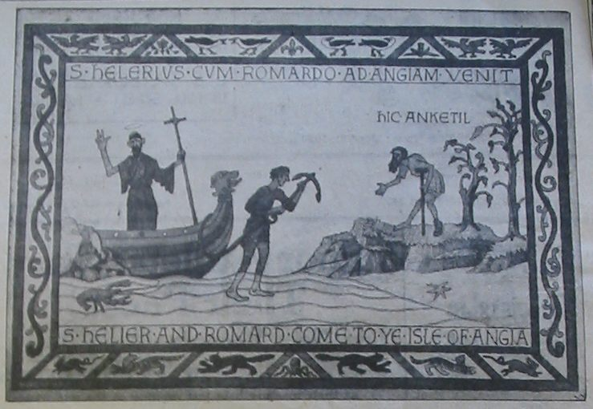

Saint Helier - Saint Hélyi - Saint Hélier

 Legends are stories which are usually based on a truth, but as the years pass the stories change, with an embellishment added here, and a small fact removed there, until the accepted legend bears little or no relation to the facts.
One such legend is that of the patron saint of Jersey, St Helier, who was credited with converting the inhabitants to Christianity, and being responsible for colonising the Island.
The story is that he was a Belgian who came to Jersey and lived as a hermit, eventually being martyred by marauding pirates who beheaded him with an axe - hence the crossed axes on the parish crest.
However, some facts have come to light which suggest that Helier or Helerius may not have been quite such a driving force in the Island's history.
That he was Belgian appears true, his father was Sigebert, a nobleman from Tongres and his mother was Lusigard, both pagans.
They consulted Cunebert, a missionary credited with supernatural powers, who told them that when they had a child they must hand him over to God, and that he, Cunebert, would bring him up. They agreed, but when the boy was born they changed their minds - shades of Rumpelstiltskin.
When the boy was seven, he became seriously ill. Cunebert cured him, and the parents duly handed their child over, as originally agreed.
The child was renamed Helerius and studied the Christian teachings with Cunebert. It is said that Helerius' religious fervour astounded everyone, as did the miracles he performed, but neither impressed his father who, displeased with the saint, had Cunebert murdered.
Horrified at what had happened to his mentor, Helerius left the area and moved to Morins, where he lived alone for seven years in an abandoned chapel.
The miracles he continued to perform brought people flocking to see him and, uncomfortable with his fame, he left, and went to Nanteuil where he was baptised by St Marcoulf.
Marcoulf then suggested that Helerius should go to Jersey to continue his devotions, accompanied by St Romard, which seems to dilute the hermit image a bit.
There they found a population of a couple of dozen terrified people who lived in fear of the murderous pirates who regularly landed on the Island to murder and pillage. Romard went back to Nanteuil while Helerius made himself a shelter oh a rocky outcrop, and returned to his solitary life.
Romard returned some months later with St Marcoulf who wanted to found a monastery in Jersey. L'Amy's Jersey Folklore states: 'They found St. Helerius attenuated by countless privations, and kept alive mainly by his blazing fanaticism.'
There appears no record of the saint doing good deeds and helping the locals. One day, as Helerius, Romard and Marcoulf were walking along the beach, 'surrounded by a group of miserable natives', they saw several Scandinavian warships heading for shore. Having had to deal with numerous similar invasions, it is hardly surprising that the natives weren't exactly jumping for joy.
When pirates arrived, the usual sequence of events was for the natives to run like the clappers or risk being hacked to death, while the invaders helped themselves to whatever it was they thought was valuable.
This time St Marcoulf made the sign of the cross, and the Jerseymen ran at the invaders who, gobsmacked by such uncharacteristic behaviour, promptly turned tail and fled.
St Marcoulf returned to France to recruit workmen to build his monastery. When he came back he discovered that the pirates had returned to wreak their revenge, St Romard had gone inland to look after the islanders, while St. Helerius had returned to his cave - and been murdered.
St Marcoulf sent Helerius' remains to be buried in France, and started to build the monastery near the hermit's cave, where Elizabeth Castle now stands.
Priests and teachers from France were brought to the monastery, later a school was set up add students and scholars began arriving. Thus was Jersey colonised.
Jersey Evening Post 29/1/2000
R'tou à la page d'siez-mé | Back to home page
E-mail: geraint@societe-jersiaise.org